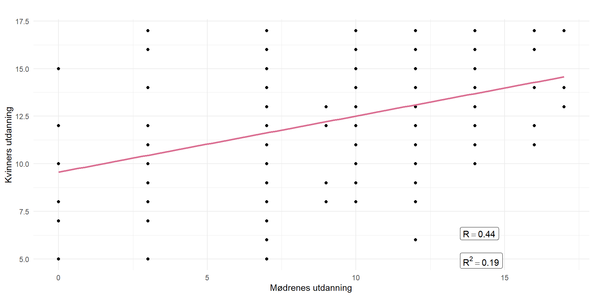
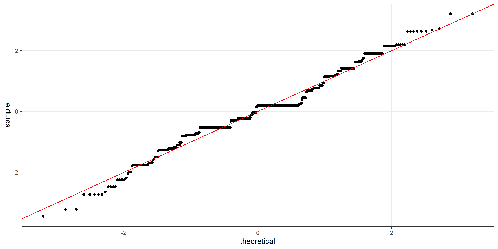
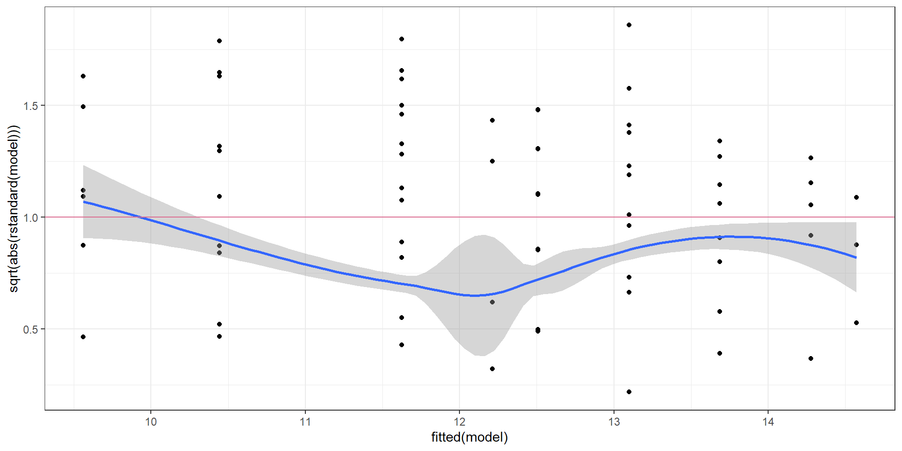
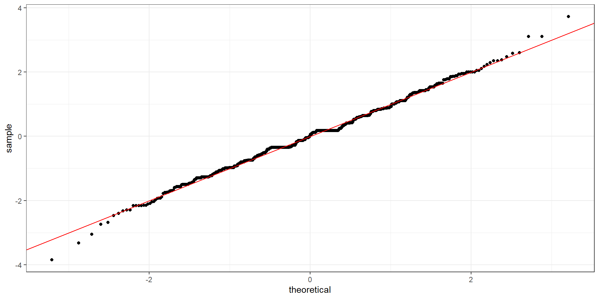
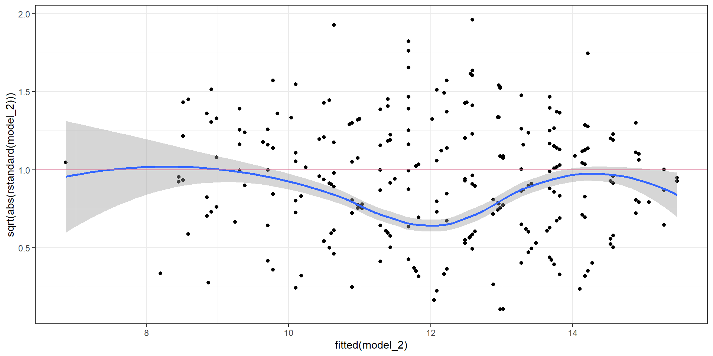

Fakultet for biovitenskap, fiskeri og økonomi.
Kandidatnummer 6, SOK-2009, Høst 2023
20-11-2023
Anta at du har to sett med to seksidede terninger. Noen andre kaster terningene og skriver ned summen av prikker fra begge terningene \(T^1_2\) og \(T^2_2\) . Du får ikke se terningene men får vite at summen fra sett en er større en fra sett to dvs. \(T^1_2 > T^2_2\). La oss si at du tar ut to terninger en fra sett en \(T^1_1\) og en fra sett to \(T^2_2\).
Nei, den er ikke lik siden vi har betinget sannsynlighet. (Her skrev jeg egentlig ja, og bommet litt på oppgaven opprinnelig)
Forventningsverdien for en terning er alltid \(E(T)=\frac{1+2+3+4+5+6}{6}=3.5\) , men når vi får betinget sannsynlighet så endres sannsynligheten seg.
Tegn en graf med mulige utfall for \(T_1\) og \(T_2\). Hvilke utfall er mulige og hvilke er ikke mulige gitt \(T^1_2>T^2_2\)?
Her ser man en graf med mulige utfall:
Bruk R og regn ut forventningsverdien til de to terningene.
# Forventningsverdien for en enkel terning med uniform sannsynlighet
terning_forventning <- mean(terninger$t1_1)
# Forventningsverdien til de to terningene med betinget sannsynlighet
terningsett_t1_forventning <- mean(terninger_true$t1_1)
terningsett_t2_forventning <- mean(terninger_true$t2_1)
print(terning_forventning)[1] 3.5[1] 4.273043[1] 2.726957\(E(T) = \frac{1}{6} \sum_{T=0}^{6} T\)
\(E(T_1^1) = \frac{\sum_{(T_1^1, T_1^2, T_2^1, T_2^2) \in S'} T_1^1}{|S'|}\)
\(E(T_2^1) = \frac{\sum_{(T_1^1, T_1^2, T_2^1, T_2^2) \in S'} T_2^1}{|S'|}\)
1.Lag 36x36 vektorer med et tall for hver terning, det vil si [(1,1)(1,1)], [(1,1)(1,2)],[(1,1)(1,3)],………., [(6,6)(6,6)].
Dette er utfallsrommet for to sett med to terninger. Du må muligens bruke en spesial kommando for å få til dette datasettet.
Å printe ut utfallsrommet gir oss 1296 vektorer som er utfallsrommet til de to terningsettene:
[1] "1 1 1 1" "2 1 1 1" "3 1 1 1" "4 1 1 1" "5 1 1 1" "6 1 1 1" "1 2 1 1"
[8] "2 2 1 1" "3 2 1 1" "4 2 1 1" "5 2 1 1" "6 2 1 1" "1 3 1 1" "2 3 1 1"
[15] "3 3 1 1" "4 3 1 1" "5 3 1 1" "6 3 1 1" "1 4 1 1" "2 4 1 1" "3 4 1 1"
[22] "4 4 1 1" "5 4 1 1" "6 4 1 1" "1 5 1 1" "2 5 1 1" "3 5 1 1" "4 5 1 1"
[29] "5 5 1 1" "6 5 1 1" "1 6 1 1" "2 6 1 1" "3 6 1 1" "4 6 1 1" "5 6 1 1"
[36] "6 6 1 1" "1 1 2 1" "2 1 2 1" "3 1 2 1" "4 1 2 1" "5 1 2 1" "6 1 2 1"
[43] "1 2 2 1" "2 2 2 1" "3 2 2 1" "4 2 2 1" "5 2 2 1" "6 2 2 1" "1 3 2 1"
[50] "2 3 2 1" "3 3 2 1" "4 3 2 1" "5 3 2 1" "6 3 2 1" "1 4 2 1" "2 4 2 1"
[57] "3 4 2 1" "4 4 2 1" "5 4 2 1" "6 4 2 1" "1 5 2 1" "2 5 2 1" "3 5 2 1"
[64] "4 5 2 1" "5 5 2 1" "6 5 2 1" "1 6 2 1" "2 6 2 1" "3 6 2 1" "4 6 2 1"
[71] "5 6 2 1" "6 6 2 1" "1 1 3 1" "2 1 3 1" "3 1 3 1" "4 1 3 1" "5 1 3 1"
[78] "6 1 3 1" "1 2 3 1" "2 2 3 1" "3 2 3 1" "4 2 3 1" "5 2 3 1" "6 2 3 1"
[85] "1 3 3 1" "2 3 3 1" "3 3 3 1" "4 3 3 1" "5 3 3 1" "6 3 3 1" "1 4 3 1"
[92] "2 4 3 1" "3 4 3 1" "4 4 3 1" "5 4 3 1" "6 4 3 1" "1 5 3 1" "2 5 3 1"
[99] "3 5 3 1" "4 5 3 1" "5 5 3 1" "6 5 3 1" "1 6 3 1" "2 6 3 1" "3 6 3 1"
[106] "4 6 3 1" "5 6 3 1" "6 6 3 1" "1 1 4 1" "2 1 4 1" "3 1 4 1" "4 1 4 1"
[113] "5 1 4 1" "6 1 4 1" "1 2 4 1" "2 2 4 1" "3 2 4 1" "4 2 4 1" "5 2 4 1"
[120] "6 2 4 1" "1 3 4 1" "2 3 4 1" "3 3 4 1" "4 3 4 1" "5 3 4 1" "6 3 4 1"
[127] "1 4 4 1" "2 4 4 1" "3 4 4 1" "4 4 4 1" "5 4 4 1" "6 4 4 1" "1 5 4 1"
[134] "2 5 4 1" "3 5 4 1" "4 5 4 1" "5 5 4 1" "6 5 4 1" "1 6 4 1" "2 6 4 1"
[141] "3 6 4 1" "4 6 4 1" "5 6 4 1" "6 6 4 1" "1 1 5 1" "2 1 5 1" "3 1 5 1"
[148] "4 1 5 1" "5 1 5 1" "6 1 5 1" "1 2 5 1" "2 2 5 1" "3 2 5 1" "4 2 5 1"
[155] "5 2 5 1" "6 2 5 1" "1 3 5 1" "2 3 5 1" "3 3 5 1" "4 3 5 1" "5 3 5 1"
[162] "6 3 5 1" "1 4 5 1" "2 4 5 1" "3 4 5 1" "4 4 5 1" "5 4 5 1" "6 4 5 1"
[169] "1 5 5 1" "2 5 5 1" "3 5 5 1" "4 5 5 1" "5 5 5 1" "6 5 5 1" "1 6 5 1"
[176] "2 6 5 1" "3 6 5 1" "4 6 5 1" "5 6 5 1" "6 6 5 1" "1 1 6 1" "2 1 6 1"
[183] "3 1 6 1" "4 1 6 1" "5 1 6 1" "6 1 6 1" "1 2 6 1" "2 2 6 1" "3 2 6 1"
[190] "4 2 6 1" "5 2 6 1" "6 2 6 1" "1 3 6 1" "2 3 6 1" "3 3 6 1" "4 3 6 1"
[197] "5 3 6 1" "6 3 6 1" "1 4 6 1" "2 4 6 1" "3 4 6 1" "4 4 6 1" "5 4 6 1"
[204] "6 4 6 1" "1 5 6 1" "2 5 6 1" "3 5 6 1" "4 5 6 1" "5 5 6 1" "6 5 6 1"
[211] "1 6 6 1" "2 6 6 1" "3 6 6 1" "4 6 6 1" "5 6 6 1" "6 6 6 1" "1 1 1 2"
[218] "2 1 1 2" "3 1 1 2" "4 1 1 2" "5 1 1 2" "6 1 1 2" "1 2 1 2" "2 2 1 2"
[225] "3 2 1 2" "4 2 1 2" "5 2 1 2" "6 2 1 2" "1 3 1 2" "2 3 1 2" "3 3 1 2"
[232] "4 3 1 2" "5 3 1 2" "6 3 1 2" "1 4 1 2" "2 4 1 2" "3 4 1 2" "4 4 1 2"
[239] "5 4 1 2" "6 4 1 2" "1 5 1 2" "2 5 1 2" "3 5 1 2" "4 5 1 2" "5 5 1 2"
[246] "6 5 1 2" "1 6 1 2" "2 6 1 2" "3 6 1 2" "4 6 1 2" "5 6 1 2" "6 6 1 2"
[253] "1 1 2 2" "2 1 2 2" "3 1 2 2" "4 1 2 2" "5 1 2 2" "6 1 2 2" "1 2 2 2"
[260] "2 2 2 2" "3 2 2 2" "4 2 2 2" "5 2 2 2" "6 2 2 2" "1 3 2 2" "2 3 2 2"
[267] "3 3 2 2" "4 3 2 2" "5 3 2 2" "6 3 2 2" "1 4 2 2" "2 4 2 2" "3 4 2 2"
[274] "4 4 2 2" "5 4 2 2" "6 4 2 2" "1 5 2 2" "2 5 2 2" "3 5 2 2" "4 5 2 2"
[281] "5 5 2 2" "6 5 2 2" "1 6 2 2" "2 6 2 2" "3 6 2 2" "4 6 2 2" "5 6 2 2"
[288] "6 6 2 2" "1 1 3 2" "2 1 3 2" "3 1 3 2" "4 1 3 2" "5 1 3 2" "6 1 3 2"
[295] "1 2 3 2" "2 2 3 2" "3 2 3 2" "4 2 3 2" "5 2 3 2" "6 2 3 2" "1 3 3 2"
[302] "2 3 3 2" "3 3 3 2" "4 3 3 2" "5 3 3 2" "6 3 3 2" "1 4 3 2" "2 4 3 2"
[309] "3 4 3 2" "4 4 3 2" "5 4 3 2" "6 4 3 2" "1 5 3 2" "2 5 3 2" "3 5 3 2"
[316] "4 5 3 2" "5 5 3 2" "6 5 3 2" "1 6 3 2" "2 6 3 2" "3 6 3 2" "4 6 3 2"
[323] "5 6 3 2" "6 6 3 2" "1 1 4 2" "2 1 4 2" "3 1 4 2" "4 1 4 2" "5 1 4 2"
[330] "6 1 4 2" "1 2 4 2" "2 2 4 2" "3 2 4 2" "4 2 4 2" "5 2 4 2" "6 2 4 2"
[337] "1 3 4 2" "2 3 4 2" "3 3 4 2" "4 3 4 2" "5 3 4 2" "6 3 4 2" "1 4 4 2"
[344] "2 4 4 2" "3 4 4 2" "4 4 4 2" "5 4 4 2" "6 4 4 2" "1 5 4 2" "2 5 4 2"
[351] "3 5 4 2" "4 5 4 2" "5 5 4 2" "6 5 4 2" "1 6 4 2" "2 6 4 2" "3 6 4 2"
[358] "4 6 4 2" "5 6 4 2" "6 6 4 2" "1 1 5 2" "2 1 5 2" "3 1 5 2" "4 1 5 2"
[365] "5 1 5 2" "6 1 5 2" "1 2 5 2" "2 2 5 2" "3 2 5 2" "4 2 5 2" "5 2 5 2"
[372] "6 2 5 2" "1 3 5 2" "2 3 5 2" "3 3 5 2" "4 3 5 2" "5 3 5 2" "6 3 5 2"
[379] "1 4 5 2" "2 4 5 2" "3 4 5 2" "4 4 5 2" "5 4 5 2" "6 4 5 2" "1 5 5 2"
[386] "2 5 5 2" "3 5 5 2" "4 5 5 2" "5 5 5 2" "6 5 5 2" "1 6 5 2" "2 6 5 2"
[393] "3 6 5 2" "4 6 5 2" "5 6 5 2" "6 6 5 2" "1 1 6 2" "2 1 6 2" "3 1 6 2"
[400] "4 1 6 2" "5 1 6 2" "6 1 6 2" "1 2 6 2" "2 2 6 2" "3 2 6 2" "4 2 6 2"
[407] "5 2 6 2" "6 2 6 2" "1 3 6 2" "2 3 6 2" "3 3 6 2" "4 3 6 2" "5 3 6 2"
[414] "6 3 6 2" "1 4 6 2" "2 4 6 2" "3 4 6 2" "4 4 6 2" "5 4 6 2" "6 4 6 2"
[421] "1 5 6 2" "2 5 6 2" "3 5 6 2" "4 5 6 2" "5 5 6 2" "6 5 6 2" "1 6 6 2"
[428] "2 6 6 2" "3 6 6 2" "4 6 6 2" "5 6 6 2" "6 6 6 2" "1 1 1 3" "2 1 1 3"
[435] "3 1 1 3" "4 1 1 3" "5 1 1 3" "6 1 1 3" "1 2 1 3" "2 2 1 3" "3 2 1 3"
[442] "4 2 1 3" "5 2 1 3" "6 2 1 3" "1 3 1 3" "2 3 1 3" "3 3 1 3" "4 3 1 3"
[449] "5 3 1 3" "6 3 1 3" "1 4 1 3" "2 4 1 3" "3 4 1 3" "4 4 1 3" "5 4 1 3"
[456] "6 4 1 3" "1 5 1 3" "2 5 1 3" "3 5 1 3" "4 5 1 3" "5 5 1 3" "6 5 1 3"
[463] "1 6 1 3" "2 6 1 3" "3 6 1 3" "4 6 1 3" "5 6 1 3" "6 6 1 3" "1 1 2 3"
[470] "2 1 2 3" "3 1 2 3" "4 1 2 3" "5 1 2 3" "6 1 2 3" "1 2 2 3" "2 2 2 3"
[477] "3 2 2 3" "4 2 2 3" "5 2 2 3" "6 2 2 3" "1 3 2 3" "2 3 2 3" "3 3 2 3"
[484] "4 3 2 3" "5 3 2 3" "6 3 2 3" "1 4 2 3" "2 4 2 3" "3 4 2 3" "4 4 2 3"
[491] "5 4 2 3" "6 4 2 3" "1 5 2 3" "2 5 2 3" "3 5 2 3" "4 5 2 3" "5 5 2 3"
[498] "6 5 2 3" "1 6 2 3" "2 6 2 3" "3 6 2 3" "4 6 2 3" "5 6 2 3" "6 6 2 3"
[505] "1 1 3 3" "2 1 3 3" "3 1 3 3" "4 1 3 3" "5 1 3 3" "6 1 3 3" "1 2 3 3"
[512] "2 2 3 3" "3 2 3 3" "4 2 3 3" "5 2 3 3" "6 2 3 3" "1 3 3 3" "2 3 3 3"
[519] "3 3 3 3" "4 3 3 3" "5 3 3 3" "6 3 3 3" "1 4 3 3" "2 4 3 3" "3 4 3 3"
[526] "4 4 3 3" "5 4 3 3" "6 4 3 3" "1 5 3 3" "2 5 3 3" "3 5 3 3" "4 5 3 3"
[533] "5 5 3 3" "6 5 3 3" "1 6 3 3" "2 6 3 3" "3 6 3 3" "4 6 3 3" "5 6 3 3"
[540] "6 6 3 3" "1 1 4 3" "2 1 4 3" "3 1 4 3" "4 1 4 3" "5 1 4 3" "6 1 4 3"
[547] "1 2 4 3" "2 2 4 3" "3 2 4 3" "4 2 4 3" "5 2 4 3" "6 2 4 3" "1 3 4 3"
[554] "2 3 4 3" "3 3 4 3" "4 3 4 3" "5 3 4 3" "6 3 4 3" "1 4 4 3" "2 4 4 3"
[561] "3 4 4 3" "4 4 4 3" "5 4 4 3" "6 4 4 3" "1 5 4 3" "2 5 4 3" "3 5 4 3"
[568] "4 5 4 3" "5 5 4 3" "6 5 4 3" "1 6 4 3" "2 6 4 3" "3 6 4 3" "4 6 4 3"
[575] "5 6 4 3" "6 6 4 3" "1 1 5 3" "2 1 5 3" "3 1 5 3" "4 1 5 3" "5 1 5 3"
[582] "6 1 5 3" "1 2 5 3" "2 2 5 3" "3 2 5 3" "4 2 5 3" "5 2 5 3" "6 2 5 3"
[589] "1 3 5 3" "2 3 5 3" "3 3 5 3" "4 3 5 3" "5 3 5 3" "6 3 5 3" "1 4 5 3"
[596] "2 4 5 3" "3 4 5 3" "4 4 5 3" "5 4 5 3" "6 4 5 3" "1 5 5 3" "2 5 5 3"
[603] "3 5 5 3" "4 5 5 3" "5 5 5 3" "6 5 5 3" "1 6 5 3" "2 6 5 3" "3 6 5 3"
[610] "4 6 5 3" "5 6 5 3" "6 6 5 3" "1 1 6 3" "2 1 6 3" "3 1 6 3" "4 1 6 3"
[617] "5 1 6 3" "6 1 6 3" "1 2 6 3" "2 2 6 3" "3 2 6 3" "4 2 6 3" "5 2 6 3"
[624] "6 2 6 3" "1 3 6 3" "2 3 6 3" "3 3 6 3" "4 3 6 3" "5 3 6 3" "6 3 6 3"
[631] "1 4 6 3" "2 4 6 3" "3 4 6 3" "4 4 6 3" "5 4 6 3" "6 4 6 3" "1 5 6 3"
[638] "2 5 6 3" "3 5 6 3" "4 5 6 3" "5 5 6 3" "6 5 6 3" "1 6 6 3" "2 6 6 3"
[645] "3 6 6 3" "4 6 6 3" "5 6 6 3" "6 6 6 3" "1 1 1 4" "2 1 1 4" "3 1 1 4"
[652] "4 1 1 4" "5 1 1 4" "6 1 1 4" "1 2 1 4" "2 2 1 4" "3 2 1 4" "4 2 1 4"
[659] "5 2 1 4" "6 2 1 4" "1 3 1 4" "2 3 1 4" "3 3 1 4" "4 3 1 4" "5 3 1 4"
[666] "6 3 1 4" "1 4 1 4" "2 4 1 4" "3 4 1 4" "4 4 1 4" "5 4 1 4" "6 4 1 4"
[673] "1 5 1 4" "2 5 1 4" "3 5 1 4" "4 5 1 4" "5 5 1 4" "6 5 1 4" "1 6 1 4"
[680] "2 6 1 4" "3 6 1 4" "4 6 1 4" "5 6 1 4" "6 6 1 4" "1 1 2 4" "2 1 2 4"
[687] "3 1 2 4" "4 1 2 4" "5 1 2 4" "6 1 2 4" "1 2 2 4" "2 2 2 4" "3 2 2 4"
[694] "4 2 2 4" "5 2 2 4" "6 2 2 4" "1 3 2 4" "2 3 2 4" "3 3 2 4" "4 3 2 4"
[701] "5 3 2 4" "6 3 2 4" "1 4 2 4" "2 4 2 4" "3 4 2 4" "4 4 2 4" "5 4 2 4"
[708] "6 4 2 4" "1 5 2 4" "2 5 2 4" "3 5 2 4" "4 5 2 4" "5 5 2 4" "6 5 2 4"
[715] "1 6 2 4" "2 6 2 4" "3 6 2 4" "4 6 2 4" "5 6 2 4" "6 6 2 4" "1 1 3 4"
[722] "2 1 3 4" "3 1 3 4" "4 1 3 4" "5 1 3 4" "6 1 3 4" "1 2 3 4" "2 2 3 4"
[729] "3 2 3 4" "4 2 3 4" "5 2 3 4" "6 2 3 4" "1 3 3 4" "2 3 3 4" "3 3 3 4"
[736] "4 3 3 4" "5 3 3 4" "6 3 3 4" "1 4 3 4" "2 4 3 4" "3 4 3 4" "4 4 3 4"
[743] "5 4 3 4" "6 4 3 4" "1 5 3 4" "2 5 3 4" "3 5 3 4" "4 5 3 4" "5 5 3 4"
[750] "6 5 3 4" "1 6 3 4" "2 6 3 4" "3 6 3 4" "4 6 3 4" "5 6 3 4" "6 6 3 4"
[757] "1 1 4 4" "2 1 4 4" "3 1 4 4" "4 1 4 4" "5 1 4 4" "6 1 4 4" "1 2 4 4"
[764] "2 2 4 4" "3 2 4 4" "4 2 4 4" "5 2 4 4" "6 2 4 4" "1 3 4 4" "2 3 4 4"
[771] "3 3 4 4" "4 3 4 4" "5 3 4 4" "6 3 4 4" "1 4 4 4" "2 4 4 4" "3 4 4 4"
[778] "4 4 4 4" "5 4 4 4" "6 4 4 4" "1 5 4 4" "2 5 4 4" "3 5 4 4" "4 5 4 4"
[785] "5 5 4 4" "6 5 4 4" "1 6 4 4" "2 6 4 4" "3 6 4 4" "4 6 4 4" "5 6 4 4"
[792] "6 6 4 4" "1 1 5 4" "2 1 5 4" "3 1 5 4" "4 1 5 4" "5 1 5 4" "6 1 5 4"
[799] "1 2 5 4" "2 2 5 4" "3 2 5 4" "4 2 5 4" "5 2 5 4" "6 2 5 4" "1 3 5 4"
[806] "2 3 5 4" "3 3 5 4" "4 3 5 4" "5 3 5 4" "6 3 5 4" "1 4 5 4" "2 4 5 4"
[813] "3 4 5 4" "4 4 5 4" "5 4 5 4" "6 4 5 4" "1 5 5 4" "2 5 5 4" "3 5 5 4"
[820] "4 5 5 4" "5 5 5 4" "6 5 5 4" "1 6 5 4" "2 6 5 4" "3 6 5 4" "4 6 5 4"
[827] "5 6 5 4" "6 6 5 4" "1 1 6 4" "2 1 6 4" "3 1 6 4" "4 1 6 4" "5 1 6 4"
[834] "6 1 6 4" "1 2 6 4" "2 2 6 4" "3 2 6 4" "4 2 6 4" "5 2 6 4" "6 2 6 4"
[841] "1 3 6 4" "2 3 6 4" "3 3 6 4" "4 3 6 4" "5 3 6 4" "6 3 6 4" "1 4 6 4"
[848] "2 4 6 4" "3 4 6 4" "4 4 6 4" "5 4 6 4" "6 4 6 4" "1 5 6 4" "2 5 6 4"
[855] "3 5 6 4" "4 5 6 4" "5 5 6 4" "6 5 6 4" "1 6 6 4" "2 6 6 4" "3 6 6 4"
[862] "4 6 6 4" "5 6 6 4" "6 6 6 4" "1 1 1 5" "2 1 1 5" "3 1 1 5" "4 1 1 5"
[869] "5 1 1 5" "6 1 1 5" "1 2 1 5" "2 2 1 5" "3 2 1 5" "4 2 1 5" "5 2 1 5"
[876] "6 2 1 5" "1 3 1 5" "2 3 1 5" "3 3 1 5" "4 3 1 5" "5 3 1 5" "6 3 1 5"
[883] "1 4 1 5" "2 4 1 5" "3 4 1 5" "4 4 1 5" "5 4 1 5" "6 4 1 5" "1 5 1 5"
[890] "2 5 1 5" "3 5 1 5" "4 5 1 5" "5 5 1 5" "6 5 1 5" "1 6 1 5" "2 6 1 5"
[897] "3 6 1 5" "4 6 1 5" "5 6 1 5" "6 6 1 5" "1 1 2 5" "2 1 2 5" "3 1 2 5"
[904] "4 1 2 5" "5 1 2 5" "6 1 2 5" "1 2 2 5" "2 2 2 5" "3 2 2 5" "4 2 2 5"
[911] "5 2 2 5" "6 2 2 5" "1 3 2 5" "2 3 2 5" "3 3 2 5" "4 3 2 5" "5 3 2 5"
[918] "6 3 2 5" "1 4 2 5" "2 4 2 5" "3 4 2 5" "4 4 2 5" "5 4 2 5" "6 4 2 5"
[925] "1 5 2 5" "2 5 2 5" "3 5 2 5" "4 5 2 5" "5 5 2 5" "6 5 2 5" "1 6 2 5"
[932] "2 6 2 5" "3 6 2 5" "4 6 2 5" "5 6 2 5" "6 6 2 5" "1 1 3 5" "2 1 3 5"
[939] "3 1 3 5" "4 1 3 5" "5 1 3 5" "6 1 3 5" "1 2 3 5" "2 2 3 5" "3 2 3 5"
[946] "4 2 3 5" "5 2 3 5" "6 2 3 5" "1 3 3 5" "2 3 3 5" "3 3 3 5" "4 3 3 5"
[953] "5 3 3 5" "6 3 3 5" "1 4 3 5" "2 4 3 5" "3 4 3 5" "4 4 3 5" "5 4 3 5"
[960] "6 4 3 5" "1 5 3 5" "2 5 3 5" "3 5 3 5" "4 5 3 5" "5 5 3 5" "6 5 3 5"
[967] "1 6 3 5" "2 6 3 5" "3 6 3 5" "4 6 3 5" "5 6 3 5" "6 6 3 5" "1 1 4 5"
[974] "2 1 4 5" "3 1 4 5" "4 1 4 5" "5 1 4 5" "6 1 4 5" "1 2 4 5" "2 2 4 5"
[981] "3 2 4 5" "4 2 4 5" "5 2 4 5" "6 2 4 5" "1 3 4 5" "2 3 4 5" "3 3 4 5"
[988] "4 3 4 5" "5 3 4 5" "6 3 4 5" "1 4 4 5" "2 4 4 5" "3 4 4 5" "4 4 4 5"
[995] "5 4 4 5" "6 4 4 5" "1 5 4 5" "2 5 4 5" "3 5 4 5" "4 5 4 5" "5 5 4 5"
[1002] "6 5 4 5" "1 6 4 5" "2 6 4 5" "3 6 4 5" "4 6 4 5" "5 6 4 5" "6 6 4 5"
[1009] "1 1 5 5" "2 1 5 5" "3 1 5 5" "4 1 5 5" "5 1 5 5" "6 1 5 5" "1 2 5 5"
[1016] "2 2 5 5" "3 2 5 5" "4 2 5 5" "5 2 5 5" "6 2 5 5" "1 3 5 5" "2 3 5 5"
[1023] "3 3 5 5" "4 3 5 5" "5 3 5 5" "6 3 5 5" "1 4 5 5" "2 4 5 5" "3 4 5 5"
[1030] "4 4 5 5" "5 4 5 5" "6 4 5 5" "1 5 5 5" "2 5 5 5" "3 5 5 5" "4 5 5 5"
[1037] "5 5 5 5" "6 5 5 5" "1 6 5 5" "2 6 5 5" "3 6 5 5" "4 6 5 5" "5 6 5 5"
[1044] "6 6 5 5" "1 1 6 5" "2 1 6 5" "3 1 6 5" "4 1 6 5" "5 1 6 5" "6 1 6 5"
[1051] "1 2 6 5" "2 2 6 5" "3 2 6 5" "4 2 6 5" "5 2 6 5" "6 2 6 5" "1 3 6 5"
[1058] "2 3 6 5" "3 3 6 5" "4 3 6 5" "5 3 6 5" "6 3 6 5" "1 4 6 5" "2 4 6 5"
[1065] "3 4 6 5" "4 4 6 5" "5 4 6 5" "6 4 6 5" "1 5 6 5" "2 5 6 5" "3 5 6 5"
[1072] "4 5 6 5" "5 5 6 5" "6 5 6 5" "1 6 6 5" "2 6 6 5" "3 6 6 5" "4 6 6 5"
[1079] "5 6 6 5" "6 6 6 5" "1 1 1 6" "2 1 1 6" "3 1 1 6" "4 1 1 6" "5 1 1 6"
[1086] "6 1 1 6" "1 2 1 6" "2 2 1 6" "3 2 1 6" "4 2 1 6" "5 2 1 6" "6 2 1 6"
[1093] "1 3 1 6" "2 3 1 6" "3 3 1 6" "4 3 1 6" "5 3 1 6" "6 3 1 6" "1 4 1 6"
[1100] "2 4 1 6" "3 4 1 6" "4 4 1 6" "5 4 1 6" "6 4 1 6" "1 5 1 6" "2 5 1 6"
[1107] "3 5 1 6" "4 5 1 6" "5 5 1 6" "6 5 1 6" "1 6 1 6" "2 6 1 6" "3 6 1 6"
[1114] "4 6 1 6" "5 6 1 6" "6 6 1 6" "1 1 2 6" "2 1 2 6" "3 1 2 6" "4 1 2 6"
[1121] "5 1 2 6" "6 1 2 6" "1 2 2 6" "2 2 2 6" "3 2 2 6" "4 2 2 6" "5 2 2 6"
[1128] "6 2 2 6" "1 3 2 6" "2 3 2 6" "3 3 2 6" "4 3 2 6" "5 3 2 6" "6 3 2 6"
[1135] "1 4 2 6" "2 4 2 6" "3 4 2 6" "4 4 2 6" "5 4 2 6" "6 4 2 6" "1 5 2 6"
[1142] "2 5 2 6" "3 5 2 6" "4 5 2 6" "5 5 2 6" "6 5 2 6" "1 6 2 6" "2 6 2 6"
[1149] "3 6 2 6" "4 6 2 6" "5 6 2 6" "6 6 2 6" "1 1 3 6" "2 1 3 6" "3 1 3 6"
[1156] "4 1 3 6" "5 1 3 6" "6 1 3 6" "1 2 3 6" "2 2 3 6" "3 2 3 6" "4 2 3 6"
[1163] "5 2 3 6" "6 2 3 6" "1 3 3 6" "2 3 3 6" "3 3 3 6" "4 3 3 6" "5 3 3 6"
[1170] "6 3 3 6" "1 4 3 6" "2 4 3 6" "3 4 3 6" "4 4 3 6" "5 4 3 6" "6 4 3 6"
[1177] "1 5 3 6" "2 5 3 6" "3 5 3 6" "4 5 3 6" "5 5 3 6" "6 5 3 6" "1 6 3 6"
[1184] "2 6 3 6" "3 6 3 6" "4 6 3 6" "5 6 3 6" "6 6 3 6" "1 1 4 6" "2 1 4 6"
[1191] "3 1 4 6" "4 1 4 6" "5 1 4 6" "6 1 4 6" "1 2 4 6" "2 2 4 6" "3 2 4 6"
[1198] "4 2 4 6" "5 2 4 6" "6 2 4 6" "1 3 4 6" "2 3 4 6" "3 3 4 6" "4 3 4 6"
[1205] "5 3 4 6" "6 3 4 6" "1 4 4 6" "2 4 4 6" "3 4 4 6" "4 4 4 6" "5 4 4 6"
[1212] "6 4 4 6" "1 5 4 6" "2 5 4 6" "3 5 4 6" "4 5 4 6" "5 5 4 6" "6 5 4 6"
[1219] "1 6 4 6" "2 6 4 6" "3 6 4 6" "4 6 4 6" "5 6 4 6" "6 6 4 6" "1 1 5 6"
[1226] "2 1 5 6" "3 1 5 6" "4 1 5 6" "5 1 5 6" "6 1 5 6" "1 2 5 6" "2 2 5 6"
[1233] "3 2 5 6" "4 2 5 6" "5 2 5 6" "6 2 5 6" "1 3 5 6" "2 3 5 6" "3 3 5 6"
[1240] "4 3 5 6" "5 3 5 6" "6 3 5 6" "1 4 5 6" "2 4 5 6" "3 4 5 6" "4 4 5 6"
[1247] "5 4 5 6" "6 4 5 6" "1 5 5 6" "2 5 5 6" "3 5 5 6" "4 5 5 6" "5 5 5 6"
[1254] "6 5 5 6" "1 6 5 6" "2 6 5 6" "3 6 5 6" "4 6 5 6" "5 6 5 6" "6 6 5 6"
[1261] "1 1 6 6" "2 1 6 6" "3 1 6 6" "4 1 6 6" "5 1 6 6" "6 1 6 6" "1 2 6 6"
[1268] "2 2 6 6" "3 2 6 6" "4 2 6 6" "5 2 6 6" "6 2 6 6" "1 3 6 6" "2 3 6 6"
[1275] "3 3 6 6" "4 3 6 6" "5 3 6 6" "6 3 6 6" "1 4 6 6" "2 4 6 6" "3 4 6 6"
[1282] "4 4 6 6" "5 4 6 6" "6 4 6 6" "1 5 6 6" "2 5 6 6" "3 5 6 6" "4 5 6 6"
[1289] "5 5 6 6" "6 5 6 6" "1 6 6 6" "2 6 6 6" "3 6 6 6" "4 6 6 6" "5 6 6 6"
[1296] "6 6 6 6"Fjern alle vektorer der terning sett en er større en terningsett to dvs. der [(1, 1) < (1, 2)].
Da ender man opp på “omtrent” halvparten av vektorene, måten jeg gjorde dette på var å ta \(({T_1^1} + {T_1^2}) > (T_2^1 + T_2^2)\) og lagret det i en TRUE/FALSE statement for å så filtrere TRUE vektorene fra datasettet og printer dem ut:
Og ender opp på 575 vektorer.
Om man deler de totale vektorene på to i utfallsrommet så kan man se at dette er omtrent 73 mindre vektorer/utfall i utfallsrommet.
Grunnen til dette er som vi har sett på tidligere i figuren.
Kalkuler forventningen til den første av terningen. Alle utfall er like sannsynlige så dette er lett.
Har allerede svart på dette men kan kjapt vise det på tavlen igjen.
Finne den beste rette linjen som passer til et sett datapunkter
Forståelelse av relasjon mellom to eller flere variabler
Prediksjon
Beslutningstaking
Effektivitet
Allsidighet
Kvantifisering av påvirkning
Datasettet vi har fått inneholder mye data på inntekt, arbeidserfaring og utdanningsnivå, spesielt for kvinner. Jeg har lyst å se om det kan finnes en korrelasjon mellom utdanning og slekt, og vil da se om det er en større korrelasjon om at barn som har utdannede foreldre også tar utdanning selv.
| taxableinc | federaltax | hsiblings | hfathereduc | hmothereduc | siblings | lfp | hours | kidsl6 | kids618 | age | educ | wage | wage76 | hhours | hage | heduc | hwage | faminc | mtr | mothereduc | fathereduc | unemployment | largecity | exper |
|---|---|---|---|---|---|---|---|---|---|---|---|---|---|---|---|---|---|---|---|---|---|---|---|---|
| 12200 | 1494 | 1 | 14 | 16 | 4 | 1 | 1610 | 1 | 0 | 32 | 12 | 3.3540 | 2.65 | 2708 | 34 | 12 | 4.0288 | 16310 | 0.7215 | 12 | 7 | 5.0 | 0 | 14 |
| 18000 | 2615 | 8 | 7 | 3 | 0 | 1 | 1656 | 0 | 2 | 30 | 12 | 1.3889 | 2.65 | 2310 | 30 | 9 | 8.4416 | 21800 | 0.6615 | 7 | 7 | 11.0 | 1 | 5 |
| 24000 | 3957 | 4 | 7 | 10 | 2 | 1 | 1980 | 1 | 3 | 35 | 12 | 4.5455 | 4.04 | 3072 | 40 | 12 | 3.5807 | 21040 | 0.6915 | 12 | 7 | 5.0 | 0 | 15 |
| 16400 | 2279 | 6 | 7 | 12 | 5 | 1 | 456 | 0 | 3 | 34 | 12 | 1.0965 | 3.25 | 1920 | 53 | 10 | 3.5417 | 7300 | 0.7815 | 7 | 7 | 5.0 | 0 | 6 |
| 10000 | 1063 | 3 | 7 | 7 | 7 | 1 | 1568 | 1 | 2 | 31 | 14 | 4.5918 | 3.60 | 2000 | 32 | 12 | 10.0000 | 27300 | 0.6215 | 12 | 14 | 9.5 | 1 | 7 |
| 6295 | 370 | 8 | 7 | 7 | 4 | 1 | 2032 | 0 | 0 | 54 | 12 | 4.7421 | 4.70 | 1040 | 57 | 11 | 6.7106 | 19495 | 0.6915 | 14 | 7 | 7.5 | 1 | 33 |
Derfor tar jeg tar den avhengige variabelen “Kvinnens utdanningsnivå i år” for 1975 og den uavhengige variabelen “Kvinnens mor sitt utdanningsnivå i år” og sjekker om det er en korrelasjon.
\(s^2\) Brukes for å finne det forventede kvadrerte avviket fra forventningsverdi
\(\frac{\sum (x_i - \overline{x})^2}{n-1}\)
\(s =\sqrt{s^2}\) Brukes for å finne standardavviket og tallet sier hvor mye verdien av det faktiske estimatet avviker over eller under gjennomsnittet
Kovariansen sier om hvordan forhold variablene har mellom seg. Variablene beveger seg i samme retning da tallet er positivt, 0 er ikke noe forhold, negativt er at de beveger seg vekk fra hverandre
Kjører en enkel lineær regresjonsanalyse \(\hat{y} = \hat\alpha + \hat\beta x\), hatten betyr bare at verdiene er estimert.
Så får jeg ut denne utskriften:
Call:
lm(formula = educ ~ mothereduc, data = mroz)
Residuals:
Min 1Q Median 3Q Max
-7.0972 -1.0972 0.3767 0.9028 6.5558
Coefficients:
Estimate Std. Error t value Pr(>|t|)
(Intercept) 9.55981 0.21898 43.66 <2e-16 ***
mothereduc 0.29478 0.02224 13.25 <2e-16 ***
---
Signif. codes: 0 '***' 0.001 '**' 0.01 '*' 0.05 '.' 0.1 ' ' 1
Residual standard error: 2.054 on 751 degrees of freedom
Multiple R-squared: 0.1895, Adjusted R-squared: 0.1884
F-statistic: 175.6 on 1 and 751 DF, p-value: < 2.2e-16
For å se om det kan være noen videre sammenheng mellom flere i familien med utdanning tar jeg flere variabler inn i regresjonen og kjører en multippel regresjon.
Jeg legger til variabelen “Mannens utdanning” for å se om det er en sammenheng mellom “Kvinners utdanning”, “Morens utdanning” og “Mannens utdanning”
Kjører en multippel lineær regresjonsanalyse: \(y_i = \alpha + \beta_1 x_1, _i + \beta_2 x_2, _i ... \beta_k x_k, _i + \epsilon_i\)
Call:
lm(formula = educ ~ mothereduc + heduc, data = mroz)
Residuals:
Min 1Q Median 3Q Max
-6.5843 -1.0999 0.0186 1.1059 6.3625
Coefficients:
Estimate Std. Error t value Pr(>|t|)
(Intercept) 5.66861 0.28149 20.138 <2e-16 ***
mothereduc 0.17919 0.01961 9.137 <2e-16 ***
heduc 0.39711 0.02186 18.165 <2e-16 ***
---
Signif. codes: 0 '***' 0.001 '**' 0.01 '*' 0.05 '.' 0.1 ' ' 1
Residual standard error: 1.713 on 750 degrees of freedom
Multiple R-squared: 0.4371, Adjusted R-squared: 0.4356
F-statistic: 291.2 on 2 and 750 DF, p-value: < 2.2e-16Sjekker først den enkle regresjonsanalysen


Shapiro-Wilk normality test
data: residuals(model)
W = 0.97183, p-value = 7.264e-11Sammenligner fordelingen av residualene med en normal fordeling.
I shapiro testen kommer det ut en lav p-verdi som sier at det er statistisk signifikant bevis for at dataene ikke følger en normalfordeling
Hvis residualene avviker fra den røde linjen tyder det på brudd.
Tar også en visuell undersøkelse av homoskedastisitet, med en “loess” local estimated scatterplot smoothing
Er den ikke lineær kan man si at det er heteroskedastistisk og antakelsen bryter
For å se mer presist om modellen fungerer vil jeg også sjekke ut forholdet til multippel regresjon
For multippel regresjon


Shapiro-Wilk normality test
data: residuals(model_2)
W = 0.99511, p-value = 0.01686